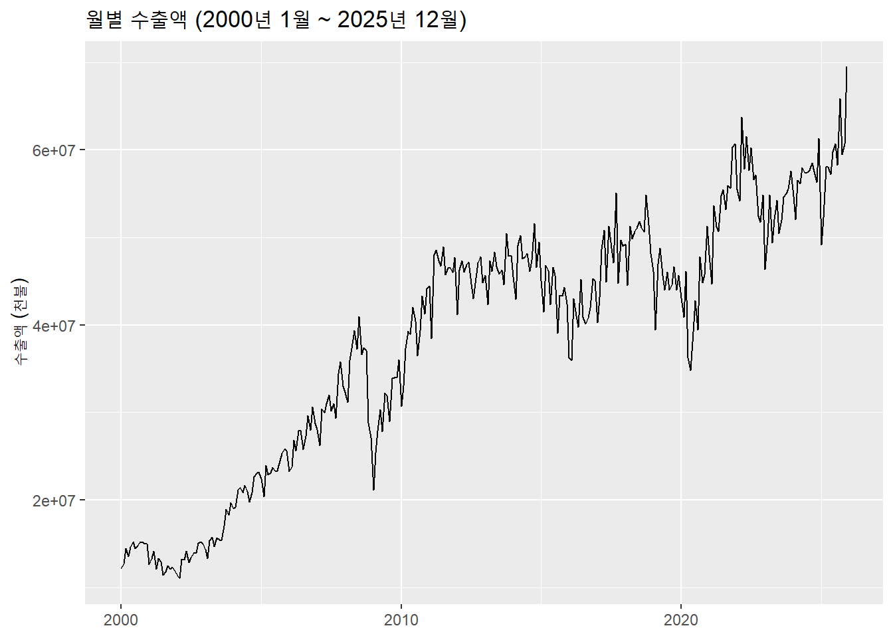
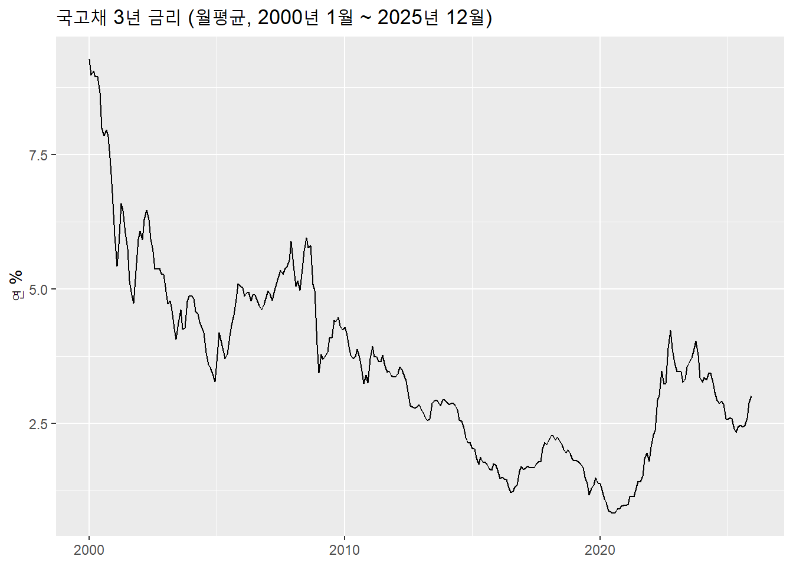
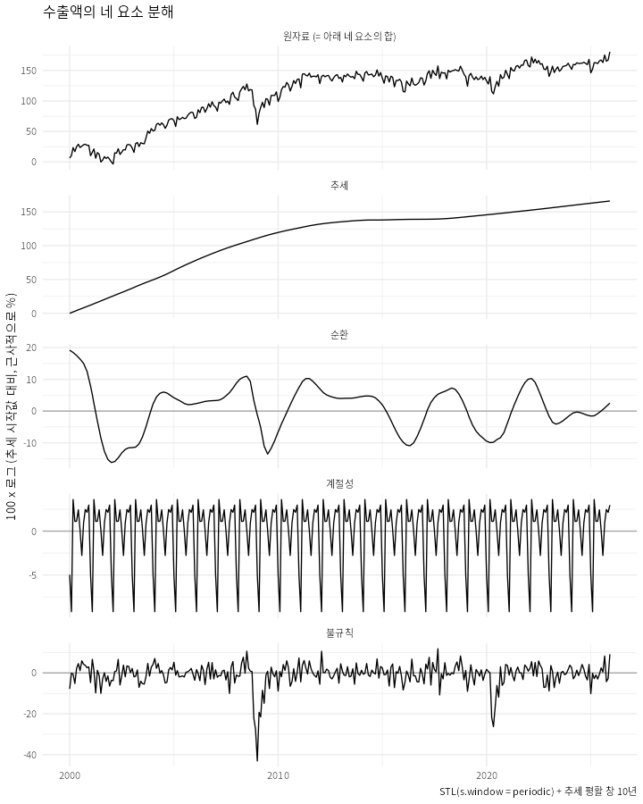
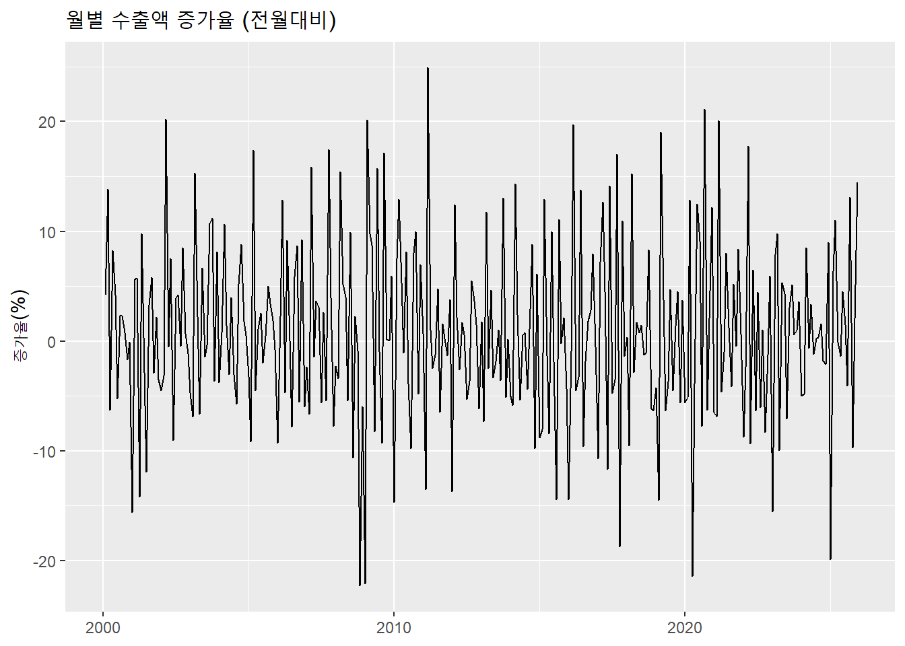
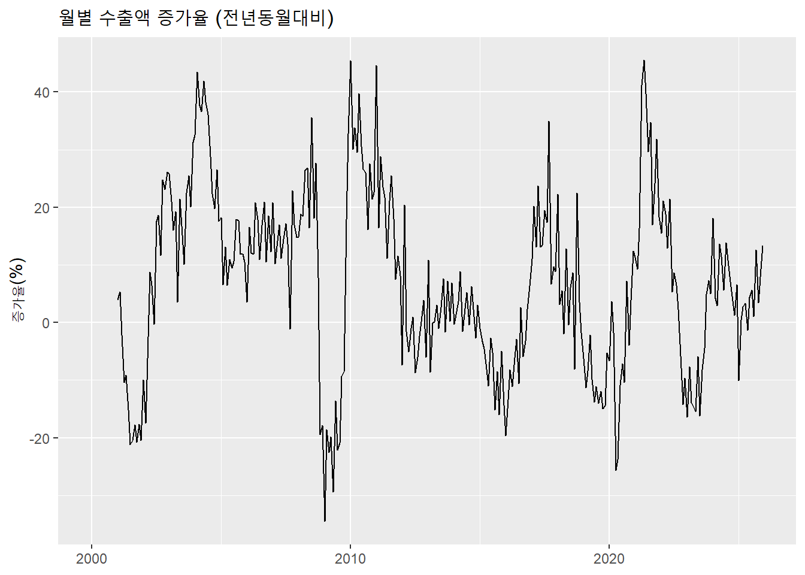
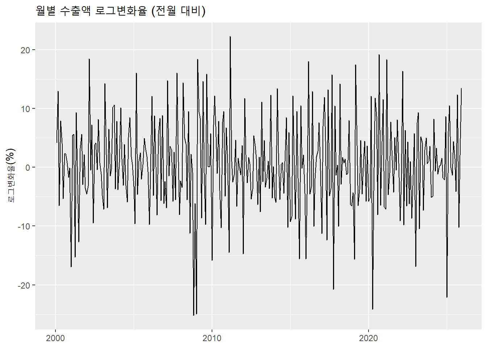

R 스크립트 코드 보기/접기
x <- c(10, 2, 6, 1, 5)
y <- c("apple", "banana", "cranberry", "durian")
z <- c(TRUE, FALSE, TRUE, TRUE)
w <- as.factor(y)
class(x)
class(y)
class(z)
class(w)
length(x)
length(y)c()로 벡터를 생성class()로 확인[]의 용법
x[x > 5])which(), %in%$ 이용: 데이터프레임$변수이름df[행, 열]은 벡터 인덱싱을 두 축으로 확장| 하려는 일 | tidyverse | base R |
|---|---|---|
| 한 열 꺼내기 | pull(lifeExp) |
df$lifeExp |
| 새 변수 | mutate(gdp = gdpPercap * pop) |
df$gdp <- df$gdpPercap * df$pop |
| 행 선택 | filter(year == 2007) |
df[df$year == 2007, ] |
| 열 선택 | select(country, lifeExp) |
df[, c("country", "lifeExp")] |
x <- c(15, 18, 3, 10)일 때 x[x > 10]의 결과를 예측하세요.
다음 코드의 결과를 예측하세요.
여기서는 한국은행경제통계시스템에서 월별 수출액 통계를 다운받아서 분석함
시계열 자료는 횡단면 자료와 달리 관측 순서가 의미를 가짐
df$date의 내용과 클래스가 ym()을 적용하기 이전과 이후 어떻게 달라지는지 확인

시계열의 종류에 따라 상이한 패턴이 나타남
지속적으로 상승하는 추세가 뚜렷한 수출액과 달리 아래 국고채 3년 만기 금리는 과거보다 낮아지는 경향 위에 국면별로 오르내려 단일한 추세로 요약되지 않음
수출액은 계절성과 조업일수 등의 차이로 월간 변동이 크지만 금리는 상대적으로 월간 변동이 작고 서서히 움직임

분해의 예

lag(x)는 한 기간 전 값, lag(x, 12)는 12 기간 전 값# A tibble: 14 × 4
date export export_l1 export_l12
<date> <dbl> <dbl> <dbl>
1 2000-01-01 12162425 NA NA
2 2000-02-01 12676042 12162425 NA
3 2000-03-01 14429703 12676042 NA
4 2000-04-01 13522040 14429703 NA
5 2000-05-01 14636755 13522040 NA
6 2000-06-01 15250940 14636755 NA
7 2000-07-01 14455656 15250940 NA
8 2000-08-01 14786880 14455656 NA
9 2000-09-01 15133379 14786880 NA
10 2000-10-01 15248068 15133379 NA
11 2000-11-01 14989068 15248068 NA
12 2000-12-01 14976555 14989068 NA
13 2001-01-01 12644929 14976555 12162425
14 2001-02-01 13354074 12644929 12676042

로그와 로그차분
Min. 1st Qu. Median Mean 3rd Qu. Max. NAs
1.232e-05 2.397e-02 1.263e-01 3.255e-01 3.934e-01 2.927e+00 1 
lag()는 전영업일을 의미함실습: 아래 국고채 3년 만기 금리 (월평균) 데이터를 이용하여 시계열 그래프를 그리고 그 패턴을 간단히 설명하시오.
# 구간 구분 함수: 경계는 예시일 뿐이며 임의로 잡은 것이다
add_period <- function(df) {
df |>
mutate(period = case_when(
date < as.Date("2008-09-01") ~ "1.위기전",
date < as.Date("2010-01-01") ~ "2.금융위기",
date < as.Date("2020-03-01") ~ "3.안정기",
TRUE ~ "4.코로나이후"
))
}
# ---- 수출액: 전년동월대비 증가율 ----
# 전체 기간
df |>
drop_na(g_yoy) |>
summarise(n = n(), mean = mean(g_yoy), sd = sd(g_yoy),
min = min(g_yoy), max = max(g_yoy))# A tibble: 1 × 5
n mean sd min max
<int> <dbl> <dbl> <dbl> <dbl>
1 300 6.97 15.6 -34.5 45.5# A tibble: 4 × 6
period n mean sd min max
<chr> <int> <dbl> <dbl> <dbl> <dbl>
1 1.위기전 92 13.4 14.5 -21.2 43.5
2 2.금융위기 16 -9.41 20.1 -34.5 32.8
3 3.안정기 122 4.96 14.0 -19.6 45.4
4 4.코로나이후 70 5.71 14.7 -25.6 45.5블록별 내용
A. 자료 불러오기와 날짜 다루기
작업: CSV 읽기, 문자열 날짜를 Date로 변환, 시간순 정렬 확인 (readr, lubridate) 개념: 관측 순서의 의미, 빈도, 표본기간, 명목/실질, 계절조정 여부
B. 수준 그림 그리기와 읽기
작업: geom_line, 축과 제목 정리, 특이 시점에 geom_vline 개념: 추세, 계절성, 변동성 변화, 특이 사건 학생이 그림에서 관찰한 것을 먼저 글로 적고, 이후 블록에서 검증하는 흐름으로 진행
C. 변환: 로그, 차분, 성장률
작업: mutate()와 lag()로 전기대비, 전년동기대비 증가율, 로그차분 생성, 세 그림 비교 개념: 로그 변환의 이유, 로그차분이 성장률의 근사라는 점, 전기대비와 전년동기대비의 차이 주가 예제(10분): 같은 코드로 주가 수준과 로그수익률을 그리고 매크로 자료와 비교
D. 요약통계와 구간 비교
작업: summarise()로 성장률의 평균, 표준편차, 최소/최대 계산, 기간 구분 변수로 구간별 비교 개념: 수준이 아니라 성장률에 대해 요약통계를 구하는 이유, 변동성의 기간별 변화 주가 예제(10분): 2008, 2020 구간별 수익률 표준편차 비교
E. 계절성 확인
작업: 월별 평균 성장률 그림, 연도별 선을 겹친 seasonal plot STL은 제외 (이미 배운 group_by/summarise와 ggplot만 사용)
F. 자기상관
작업: lag plot을 먼저 그린 뒤 acf() 소개, 수출액 수준과 성장률의 ACF 비교 개념: 시간 의존성, 수준 시계열의 ACF가 천천히 감소하는 이유 주가 대비(핵심): 주가 수준, 수익률, 제곱(또는 절대) 수익률의 ACF를 나란히 비교 수준: 매우 천천히 감소 / 수익률: 거의 0 / 제곱 수익률: 오래 지속되는 양의 상관 해석은 “수준, 수익률, 변동성이 서로 다른 성질을 갖는다”까지만 하고, 효율적 시장가설로 비약하지 않는다. 선택: 수익률 히스토그램에 정규밀도를 겹쳐 두꺼운 꼬리 제시 (stat_function(fun = dnorm)) 과제
학생이 고른 변수 하나에 대해 (i) 수준, 로그, 성장률 그림, (ii) 기간별 요약통계, (iii) ACF를 만들고, 그림에서 읽은 내용을 한 단락으로 해석한다.
A. 자료 불러오기와 날짜 다루기 (15분) 설명 (5분): 횡단면 자료와의 차이(관측 순서가 의미를 가짐), 변수 정의, 단위, 빈도, 표본기간, 명목/실질, 계절조정 여부 실습 (10분) read_csv()로 수출액 읽기 ymd() 또는 as.Date()로 날짜 변환, class()로 확인 arrange(date)로 시간순 정렬, range(date)와 nrow()로 표본기간과 관측치 수 확인 체크포인트: 날짜 열이 Date 클래스인가, 정렬되어 있는가 자주 막히는 곳: 날짜 형식(2020-01처럼 일이 없는 경우, 2020.01 등). 월 자료에 일이 없으면 paste0(x, “-01”)로 붙인 뒤 변환하는 방법을 미리 준비해 두십시오. B. 수준 그림 그리기와 읽기 (20분) 설명 (5분): 시계열의 네 요소(추세, 계절성, 순환, 불규칙 변동)를 그림 위에서 짚기 실습 (15분) ggplot(aes(date, exports)) + geom_line(), 제목과 축 라벨 정리 geom_vline(xintercept = as.Date(“2008-09-15”)), as.Date(“2020-03-01”)로 특이 시점 표시 학생이 그림에서 관찰한 것을 2~3문장으로 먼저 적기 (추세, 계절 진폭, 위기 시점 반응) 의도: 이 관찰 메모를 C, D, E에서 하나씩 검증하는 흐름으로 사용. 특히 “변동폭이 수준이 커지면서 함께 커진다”는 관찰이 C의 로그 변환 동기가 됩니다. C. lag와 변환 (45분)
C-1. lag() 도입 (10분)
설명: lag(x)는 한 기간 전 값, lag(x, 12)는 12기간 전 값 실습: mutate(exports_l1 = lag(exports), exports_l12 = lag(exports, 12)) 후 앞부분을 출력해 첫 행들이 NA인 것을 직접 확인 반드시 짚을 것 정렬이 안 되어 있으면 lag가 엉뚱한 값을 가져오므로 arrange(date) 선행이 필수 stats::lag와 이름이 충돌할 수 있으므로 dplyr::lag()로 명시하면 안전 NA는 오류가 아니라 이전 값이 없다는 뜻
C-2. 증가율 (15분)
전기대비 증가율: (x / lag(x) - 1) * 100 전년동기대비 증가율: (x / lag(x, 12) - 1) * 100 두 증가율 그림을 비교: 전기대비는 계절 진동이 크고, 전년동기대비는 계절 진동이 제거되어 부드러움 질문: 왜 전년동기대비에서 계절성이 사라지는가? (같은 달끼리 비교하므로)
C-3. 로그와 로그차분 (10분)
log(x), log(x) - lag(log(x)) 로그차분이 전기대비 증가율의 근사임을 두 열을 나란히 출력해 확인 (증가율이 작을 때 거의 일치, 클수록 차이) 수준, 로그, 로그차분의 세 그림을 facet_wrap 또는 patchwork로 나열 로그 변환이 B에서 관찰한 “수준에 비례하는 변동폭”을 어떻게 바꾸는지 확인 diff(log(x))는 길이가 1 줄어들어 mutate에 바로 넣으면 오류가 나므로, 이 수업에서는 lag 방식으로 통일하는 것을 권합니다.
C-4. 주가 예제 (10분)
같은 변환을 주가에 적용해 수준과 로그수익률 그림 비교 포인트 두 가지 일별 자료에서 lag(1)은 전 영업일이며, 주말과 공휴일은 자료에 없음 일별 자료에는 전년동기대비를 쓰지 않고 일별 수익률만 사용 매크로 성장률과 달리 수익률 그림은 변동성이 구간별로 크게 달라지는 모습이 눈에 띔. 이를 D로 연결. D. 요약통계와 구간 비교 (25분) 설명 (5분): 수준이 아니라 성장률(변환값)에 대한 요약통계를 구하는 이유. 수준의 평균은 어느 기간을 고르느냐에 따라 달라짐. 실습 (20분) summarise(mean = mean(g, na.rm = TRUE), sd = sd(g, na.rm = TRUE), min, max) 기간 구분 변수 만들기: mutate(period = case_when(date < as.Date(“2008-09-01”) ~ “위기 전”, …)) 기간별 비교: group_by(period) 후 summarise (또는 .by = period) 주가 수익률로 같은 작업 반복, 위기 구간의 표준편차 비교 체크포인트: 수출액 성장률과 주가 수익률 모두에서 구간별 표준편차가 달라지는가, 어느 자료에서 더 극적인가 주의: 구간 경계를 임의로 잡았다는 점을 학생에게 명시. “위기 때 변동성이 컸다”를 증명하는 것이 아니라 이 자료에서 관찰된 차이라고 표현하도록 안내. NA 처리: C에서 만든 첫 행 NA 때문에 na.rm = TRUE가 필요함을 여기서 다시 확인. E. 계절성 확인 (10분) 실습 mutate(month = month(date, label = TRUE)), 월별 평균 전기대비 증가율을 geom_col로 그리기 선택: year를 색으로 한 연도별 seasonal plot (geom_line(aes(month, exports, group = year, color = factor(year)))) 포인트: 특정 달(예: 설 연휴가 있는 달)의 패턴을 학생이 스스로 찾게 하기 시간이 모자랄 때: 교수 시연으로 전환하고 그림만 해석하게 함 F. 자기상관 (45분)
F-1. lag plot (15분)
ggplot(aes(x = lag(g), y = g)) + geom_point(), cor(g, lag(g), use = “complete.obs”) C에서 배운 lag를 그대로 재사용하는 단계이고, “어제 값이 오늘 값과 관련 있는가”를 눈으로 확인 수출 성장률의 lag 1, lag 12 산점도를 비교하면 계절 구조와 연결됨
F-2. ACF 소개 (10분)
acf(x, na.action = na.pass) 또는 na.omit(x)를 넣어 실행 설명: ACF는 lag별 상관계수를 한 그림에 모은 것. 점선은 “0과 구별되기 어려운 범위”의 기준선. 수출액 성장률의 ACF에서 lag 12 근처가 튀는지 확인 (F-1과 연결)
F-3. 수준, 수익률, 변동성의 대비 (20분)
매크로: 수출액 수준의 ACF와 성장률의 ACF 비교 수준: 매우 천천히 감소. 설명은 “과거 값의 영향이 오래 간다” 수준으로 하고, 정상성 용어는 쓰지 않음 성장률: 빠르게 감소하거나 계절 lag에서만 튐 주가: 세 개를 나란히 주가 수준의 ACF: 매우 천천히 감소 수익률의 ACF: 거의 0 절대(또는 제곱) 수익률의 ACF: 오래 지속되는 양의 상관 해석 원칙: “수준, 수익률, 변동성은 서로 다른 성질을 갖는다”까지만. 수익률의 ACF가 0에 가깝다는 것은 선형 자기상관이 거의 없다는 관찰이고, 시장 효율성에 대한 결론으로 확대하지 않음. 선택 (시간이 남을 때): 수익률 히스토그램에 stat_function(fun = dnorm, args = list(mean = m, sd = s))를 겹쳐 두꺼운 꼬리 제시 마무리 (10분) 이번 주 흐름 정리: 그림 → 변환 → 요약 → 자기상관 블록별 핵심 문장 한 줄씩 복습 (예: “수준이 아니라 성장률을 본다”, “같은 변환이 자료에 따라 다른 것을 보여 준다”) 과제 안내 과제
학생이 고른 매크로 변수 하나에 대해
수준, 로그, 성장률 그림 기간별 요약통계 ACF (수준과 성장률) 그림에서 읽은 내용을 한 단락으로 해석
변수는 자유 선택이되, 월 또는 분기 자료로 제한하면 lag(x, 12) 또는 lag(x, 4) 선택을 스스로 고민하게 됩니다.
사전 준비물 수출액 월별 CSV와 주가 CSV를 프로젝트 zip으로 배포 (수업 중 API 호출 실패 방지) 주가 자료: KOSPI 같은 지수는 배당과 액면분할 조정이 필요 없지만, 개별 종목을 쓰면 수정주가(adjusted close)를 써야 함. 수익률 정의(log(p) - lag(log(p)))를 스크립트 주석에 명시. 스크립트는 매크로와 주가에 같은 코드가 돌아가도록 구성하고, 열 이름(date, value)을 통일해 두면 학생이 복사 후 자료만 바꾸어 쓸 수 있음 필요 패키지: tidyverse(readr, dplyr, ggplot2), lubridate, 선택으로 patchwork 남은 확인 사항 lubridate와 case_when이 이미 다뤄졌는지: 안 다뤘다면 A와 D에 각각 5분 정도를 더 배정해야 하고, 그 시간은 E에서 가져오는 것이 가장 자연스럽습니다. 수출액과 주가 자료의 표본기간을 맞출지: 두 자료의 기간이 다르면 D의 위기 구간 비교가 자료마다 다른 구간을 쓰게 되므로, 2008~2020 전후를 모두 포함하도록 미리 확인하십시오.